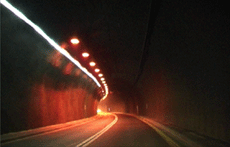
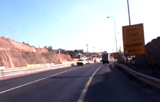

CHECKPOINT GUILO
Alina Abramov | Frankreich 2006 | 14 Min.
Format: DVD
Material: MiniDV
Originalsprache: ohne Dialoge
Drehbuch: Alina Abramov
Kamera: Alina Abramov
Schnitt: Alina Abramov
Ton: Alina Abramov
Produktion: Alina Abramov
Deutsche Erstaufführung
Eine Reise, deren Dauer ungewiss ist, ein Travelling entlang von politischen Grenzen und mentalen Begrenzungen. Guilo, der Checkpoint des gleichnamigen Jerusalemer Viertels, wird niemals passiert. Die Grenze ist hier der Punkt der Umkehr, das Eingrenzende, Undurchlässige, der Moment ohne Passage. In einem kontinuierlichen Fluss scheint die Fahrt zunächst auf ein gewisses Ziel hinzuführen, mit den Insignien einer normalen Fahrt, dem Bremsen und Beschleunigen, entlang der Kurven und Geraden einer Straße, durch Tunnels hindurch. Die Dauer streut in diese Fahrt ohne Halt allmählich den Zweifel über ein Ankommen, egal an welchem Punkt. Kaum spürbar ergeben sich zeitliche Umkehrungen beim Durchfahren der Tunnel, und man wird immer mehr von dem Gefühl erfasst, in einem räumlichen und zeitlichen Labyrinth zu sein.
Alina Abramov, geb. 1973 in Baku, Aserbaidschan. Sie lebt und arbeitet als Videokünstlerin in Frankreich.
Ausstellungen (Auswahl): Video Zone I, Tel Aviv 2002 | Action Lumière, Lyon 2004
Grey Building, Vancouver 2005 | Multipolaire, Leipzig 2006 | Vidéothèque Mobile, Rijeka 2006
zurück
|